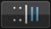
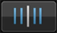

Preparation Work
BPM & Beat Grid
By properly adjusting the beat grid (and BPM) ahead of time, cues, loops and hot cues can be set to the positions of the beats. (Quantize function)
 For details on playback functions using the beat grid and BPM (synchronizing, mixing, etc.), see the respective DJ unit’s operating instructions.
For details on playback functions using the beat grid and BPM (synchronizing, mixing, etc.), see the respective DJ unit’s operating instructions.
1When [Prepare] is tapped at the top menu, the browser panel opens.
- Beat grids cannot be adjusted when linked to DJ players. To do so, return to the top menu and cancel the link for the time being, then open the browser panel.
2Tap the track whose beat grid you want to adjust.
The player panel appears and the track is played.
3Tap  in the lower right corner of the waveform display to open the beat grid adjustment options.
in the lower right corner of the waveform display to open the beat grid adjustment options.

The beat position display changes from dots to a vertical line.
4Tap [ ] on the player panel to pause playback.
] on the player panel to pause playback.
5Drag the enlarged waveform display left and right to adjust so that the beat is positioned over the white vertical line at the center.
- The enlarged waveform display can be enlarged or reduced by pinching it in or out. The paused position can be moved in units of milliseconds by enlarging then dragging.
6When  is tapped, the entire beat grid slides with the white vertical line at the center in reference to the beat position.
is tapped, the entire beat grid slides with the white vertical line at the center in reference to the beat position.
If you only want to slide the section of the beat grid beyond the white vertical line at the center, tap  instead of
instead of  .
.
7Tap  in the lower right corner of the waveform display to close the beat grid adjustment options.
in the lower right corner of the waveform display to close the beat grid adjustment options.
 Note
Note
To cancel all the adjusted beat positions and the BPM and restore them to how they were before, reanalyze the music file.

Beat grid adjustment options
For the beat grid adjustment options, see the table below.
Icon | Description |
The entire beat grid slides with reference to the position at which the track is currently paused (the white vertical line at the center). | |
These move the beat grid left or right in units of 1 msec.
| |
This decreases the beat grid’s spacing by 1 msec. | |
This increases the beat grid’s spacing by 1 msec. | |
The BPM value is multiplied by 2 (decreasing the beat grid’s spacing by 1/2). | |
The BPM value is divided by 1/2 (doubling the beat grid’s spacing). | |
 | The starting point for adjusting the beat grid is temporarily set to the position at which the track is currently paused (the white vertical line at the center) and only the section of the beat grid beyond the starting point slides with reference to the starting point. Until the starting point is canceled, only the beat positions beyond the starting point are displayed as vertical lines, and beat grid adjustment operations only affect the section of the beat grid beyond the starting point. |
 | This cancels the temporarily set starting point for adjusting the beat grid. The positions of all the beats are once again displayed as vertical lines, and beat grid adjustment operations once again affect the entire beat grid. |
This undoes the operation performed previously. Up to the last 10 operations can be undone. | |
This turns the sound of the metronome heard during playback on and off and switches its volume (high, medium, low). When touched and held, the tone can be selected. | |
Use this to input the BPM value and edit it. The beat grid’s spacing changes according to the BPM value you have entered. | |
The beat position nearest the white vertical line at the center of the enlarged waveform display is indicated with a red line as the first beat in the measure. Red lines indicating the first beat in the measure are displayed on the beat grid every four beats, from the beginning to the end of the track. |